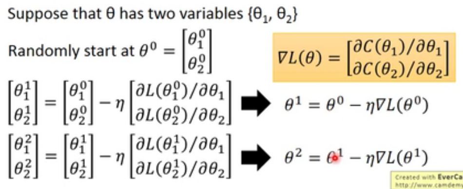
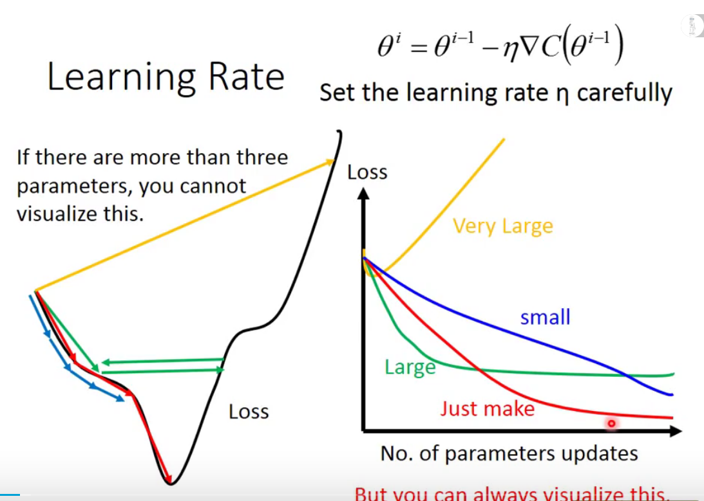
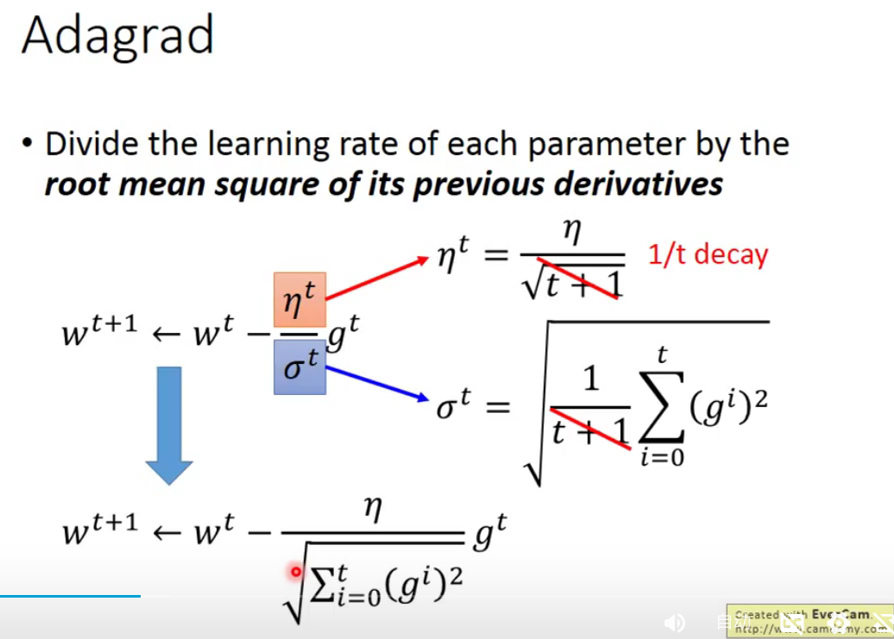
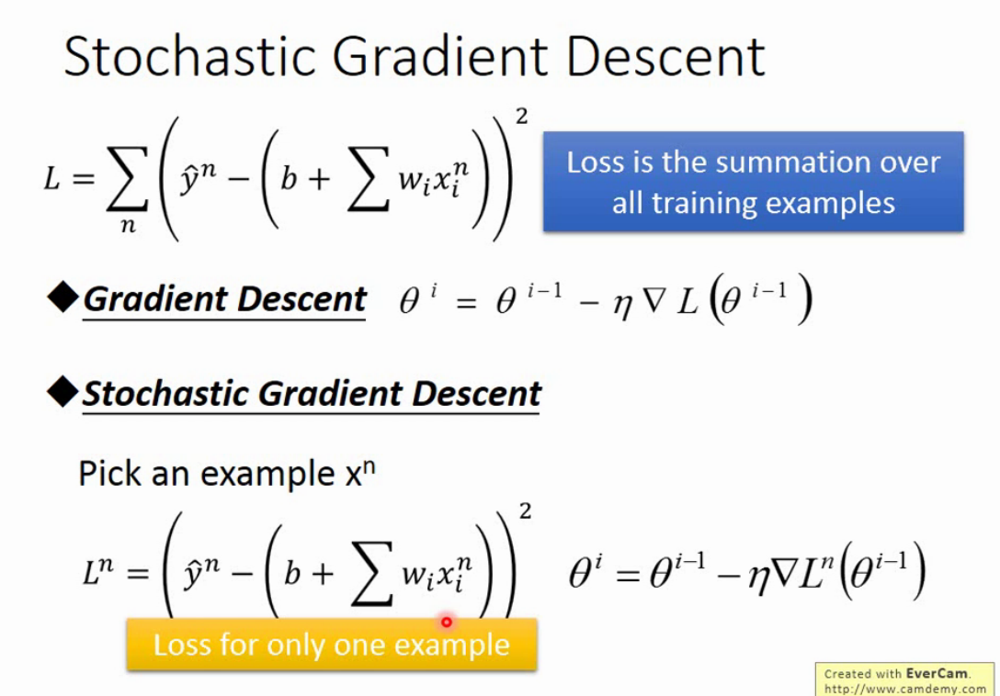

Gradient Decent 梯度下降
理解梯度下降法这篇文章非常详细的讲解了梯度下降的由来，原理和改进，非常建议直接阅读链接内文章。
下面内容学习自台大李宏毅老师的机器学习课程，案例为其 Homework1 。
0.1 Gradient Decent
首先，我们有一个可微分的函数。这个函数就代表着一座山。我们的目标就是找到这个函数的最小值，也就是山底。根据之前的场景假设，最快的下山的方式就是找到当前位置最陡峭的方向，然后沿着此方向向下走，对应到函数中，就是找到给定点的梯度。若函数在 \(x+\delta x\) 区域内递增，导数大于 0， \(\delta x\) 小于 0 才可以使得函数值减小；若函数再 \(x+\delta x\) 区域内递减，导数小于 0， \(\delta x\) 大于 0 才可以使得函数值减小。可见，只要朝着梯度相反的方向更新 \(x\) ，就能让函数值下降。

0.2 Learning Rate
控制 Learning Rate 的大小。

如果每次更新太大，那么 \(\delta x\) 可能会很大，在新的范围内误差很大，无法收敛到极值。 要确保 Learning Rate 是稳定的下降，才能找到局部最小值。一个合理的 Learning Rate 需要实现以下两点：
- 随着接近局部最小值，使 Learning Rate 也减小
- 对于不同的参数，取不同的 Learning Rate
0.3 Adagrid

如果只有一个变量，那么其偏导越大，则 step size 越大；但是如果有多个变量，每个变量都符合之前的一个变量的说法，但多个变量之间的比较，就不适合前面的理论了。
Adagrid 使用一阶偏导近似二阶偏导，这样做的好处是求值的数量大大减少了。
0.4 Stochastic Gradient Decent

随机梯度下降，之前的梯度下降是求所有 sample 的总和，更新一次参数；而随机梯度下降是随机抽取一个 sample , 更新一次参数
0.5 Sample
案例答案参考 这里
分析数据：
- csv 文件打开乱码，查了一下台湾的官方编码，为 Big5，设置 encoding 为 Big5 即可。
- 一共 12 个月的数据，每个月有前 20 天，每天有 24 小时的检测值
- NR 值类型的数据需要剔除，使用 0.0 代替
- 前 9 个小时的检测值都可以算作是变量
- 每个月有 24*20=480 个小时的检测值，除去前 9 个小时不能训练以外，共有 471 个训练数据
0.5.1 导入数据
具体导入可直接查看代码，这里说明一下导入之后的数据格式：
arrayTrainX.shape #=>(5652, 163) # 5652 = 471 * 12 # 163 = 18 * 9 + 1 # 即：每一行表示一组训练数据，每组训练数据有163个，前162个表示前9个小时的检测值，最后一个表示 bias arrayTrainY.shape #=>(5652, ) # 即：每个元素表示一组训练数据的标准值 arrayW.shape #=>(163, ) # 参数的权重
0.5.2 模型建立
线性回归模型：
\[y = \sum_{i=0}^{n} w_ix_i + b\]
前 9 个小时一个 9*18=162 个参数。\(x_i\) 表示前 9 个小时的参数，\(w_i\) 为其权重，b 为偏置，y 为预测结果
0.5.3 Loss Function
\[ Loss_{label} = \frac{1}{2} * \frac{1}{n} \sum_{i=0}^{n-1} {(\hat{y}^n - y^n)}^2 \]
0.5.4 梯度下降
\[ w_{i} = w_{i} - \eta_{w} \frac{\partial Loss}{\partial w_{i}} = w_{i} - \eta_{w} \frac{1}{n} \sum_{i=0}^{n-1} ({\hat{y}^n - y^n}) (x_i) \]
\[ b_{i} = b_{i} - \eta_{b} \frac{\partial Loss}{\partial b_{i}} = b_{i} - \eta_{b} \frac{1}{n} \sum_{i=0}^{n-1} ({\hat{y}^n - y^n}) (x_i) \]
0.5.4.1 代码分析
def GD(X, Y, W, eta, Iteration, lambdaL2):
"""
使用gradient decent learning rate 要調很小，不然很容易爆炸
X: (5652, 163)
Y: (5652, )
W: (163, )
eta: Learning Rate
"""
listCost = []
for itera in range(Iteration):
# 求预测值
# 矩阵乘法 (5652, 163) . (163, ) = (5652, )
arrayYHat = X.dot(W)
# Loss
arrayLoss = arrayYHat - Y #(5652, )
# 方差
arrayCost = (np.sum(arrayLoss**2) / X.shape[0]) #(5652, )
listCost.append(arrayCost)
# 微分
arrayGradient = (X.T.dot(arrayLoss) / X.shape[0]) + (lambdaL2 * W) #(163, )
# 更新 W
W -= eta * arrayGradient
if itera % 1000 == 0:
print("iteration:{}, cost:{} ".format(itera, arrayCost))
return W, listCost
0.5.5 Adagrid 更新 Learning Rate
\[ \eta_{n} = \frac{\eta_{n-1}}{\sqrt{\sum_{i=1}^{n-1} grad_i^2}} \]
0.5.5.1 代码分析
def Adagrad(X, Y, W, eta, Iteration, lambdaL2):
"""
X: (5652, 163)
Y: (5652, )
W: (163, )
eta: Learning Rate
"""
listCost = []
arrayGradientSum = np.zeros(X.shape[1])
for itera in range(Iteration):
arrayYHat = np.dot(X, W)
arrayLoss = arrayYHat -Y
arrayCost = np.sum(arrayLoss**2) / X.shape[0]
# save cost function value in process
listCost.append(arrayCost)
arrayGradient = (np.dot(np.transpose(X), arrayLoss) / X.shape[0]) + (lambdaL2 * W)
arrayGradientSum += arrayGradient**2
arraySigma = np.sqrt(arrayGradientSum)
W -= eta * arrayGradient / arraySigma
if itera % 1000 == 0:
print("iteration:{}, cost:{} ".format(itera, arrayCost))
return W, listCost